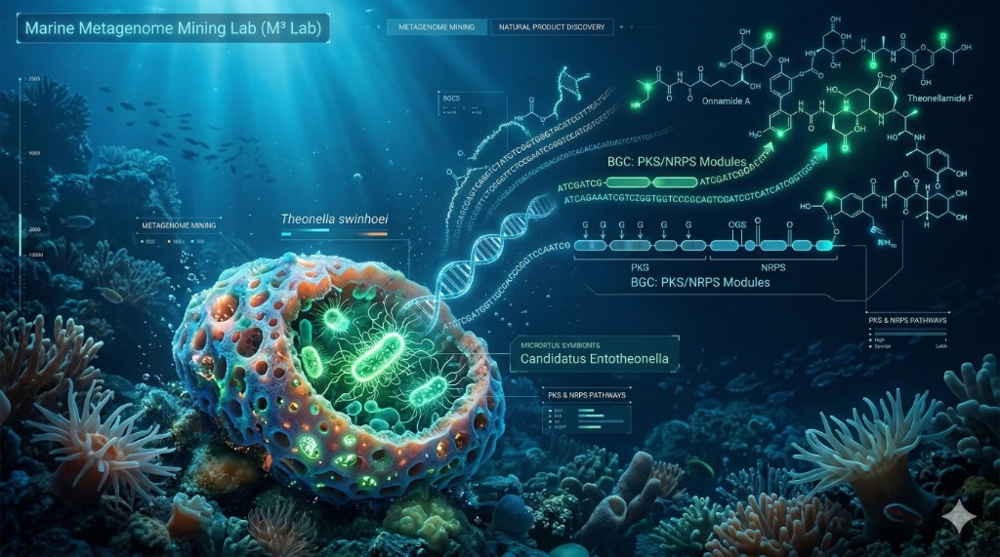

Konkuk University · Biomedical Science & Engineering
Hiyoung Kim, Ph.D.
Marine Metagenome Mining Lab (M3 Lab)
저는 건국대학교 의생명과학과에서 조교수로 재직 중인 해양 천연물 화학자이자 미생물학자입니다. 해양 무척추동물과 그 공생 미생물, 그리고 환경 메타지놈을 기반으로 새로운 유용 천연물과 그 생합성 경로를 탐색하고 있습니다.
Marine Metagenome Mining Lab은 해양 미생물 군집과 메타지놈 데이터를 화학·유전학·생물정보학적으로 통합 분석하여, 숨겨진 2차 대사산물과 생합성 유전자 클러스터를 발굴하고 기능을 규명하는 것을 목표로 합니다.
연구 내용과 구성원, 최신 성과는 상단 메뉴에서 각 페이지로 이동해 확인하실 수 있습니다.
